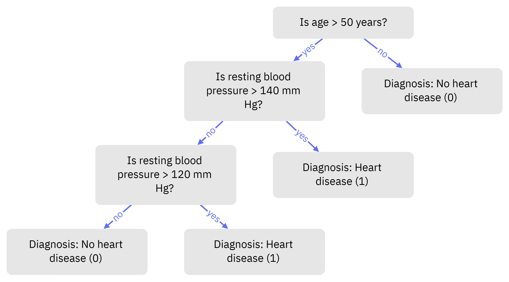

Recent developments in machine learning and artificial intelligence have introduced breakthrough methods for predicting diagnoses, health emergencies, and more. Despite some skepticism, the adoption of these technologies is steadily increasing. Healthcare is an industry constantly evolving with new technologies and treatments, making it challenging for professionals to keep up.
Timely diagnoses enabled by machine learning can help healthcare providers make informed decisions, allocate resources effectively, and ultimately save lives. Traditional diagnostic methods, which often rely on manual interpretation of clinical test results, can be time-consuming, subjective, and prone to errors. As health data becomes more accessible, machine learning has emerged as a powerful tool for diagnosing and predicting diseases, including heart disease.
In this overview, we explore two popular machine learning methods—generalized linear models and tree models—that are commonly applied in healthcare.
Understanding the Models
1. Logistic Regression: Predicting Yes or No
Definition
Logistic Regression is a supervised learning model designed to solve binary classification problems—situations where the answer is a clear “yes” or “no.” For example, it can predict whether a person has a heart disease (True/1) or not (False/0).
How It Works
The outcome of logistic regression is a probability, which always falls between 0 and 1. To get there, it uses log-odds \(\text{logit}(p_i)\) and applies a logistic function:
\[
\text{logit}(p_i) = \ln\left(\frac{p_i}{1 - p_i}\right) = \beta_0 + \beta_1 X_1 + \dots + \beta_k X_k
\]
Here, \(p_i\) is the probability of success (e.g., having heart disease), and \(1-p_i\) is the probability of failure.
\(X_1, X_2, \dots, X_k\) are the independent variables (like age or cholesterol level).
The \(\beta\) values are coefficients determined using a method called maximum likelihood estimation (MLE).
A probability less than 0.5 predicts the outcome as 0 (False), while a probability greater than 0.5 predicts it as 1 (True). For example, if \(\beta_1 = 0.8\), it means that for every 1-unit increase in \(X_1\), the odds of success increase by \(e^{0.8} \approx 2.22\)—a 122% increase!
For more information, (see Ibm 2024b).
2. Decision Tree: Breaking It Down into Steps
Definition
A Decision Tree is a versatile, non-parametric algorithm (no assumptions on data distributions or form) that can be used for both classification and regression. It uses a tree-like structure to make decisions, splitting data into branches based if-else statements.
How It Works
At each level of the tree, the algorithm chooses the best feature (like age or income) and splits the data to minimize impurity.
A node represents a decision based on a feature and a leaf contains the final prediction.
The process continues recursively until all data points are classified, or a stopping rule (like a minimum node size) is met.
For example, imagine classifying patients based on age and resting blood pressure. A Decision Tree might first split by whether patient is more than 50 years old, then by whether their blood pressure is high. Each split narrows down the data to more specific groups.

For more information, (see Ibm 2024a)
Comparison of Logistic Regression and Decision Tree
When deciding between Logistic Regression and Decision Trees, it’s important to consider factors like complexity, interpretability, data handling, and how well they generalize.
1. Model Complexity
Logistic Regression:
Logistic Regression is straightforward and focuses on simplicity. It’s perfect when you need a model that’s easy to set up, understand, and interpret.Decision Tree:
Decision Trees are more complex because they take a greedy approach—splitting data repeatedly to find the best outcomes. This makes them computationally heavier and more time-consuming to train. However, the payoff is a highly visual and intuitive representation of the decision-making process.
2. Interpretability
Logistic Regression:
This model gives you coefficients that show how much each feature (like age or income) contributes to the outcome. For example, a high coefficient for age could indicate its strong influence in predicting heart disease.Decision Tree:
The paths in a Decision Tree mirror how decisions are made in real life: “If X, then Y.” These paths are simple to follow, and the visual representation makes it easier to explain the results. Plus, features ranked by importance help you see which ones matter most in decision-making.
3. Handling of Data
Logistic Regression:
Logistic Regression assumes a lot about your data. It expects a linear relationship between the predictors and the log-odds of the outcome. It also works best when the data is independent and without multicollinearity (strong correlations between predictors).Decision Tree:
Decision Trees thrive on flexibility. They don’t require data to follow specific distributions or assumptions, and they handle both numerical and categorical data effortlessly. This makes them ideal for messy, real-world datasets.
4. Overfitting and Generalization
Logistic Regression:
Logistic Regression tends to generalize well, which means it performs consistently on new, unseen data. This is because it’s a simpler model with fewer parameters, making it less likely to overfit.Decision Tree:
Decision Trees are prone to overfitting because they can become overly complex, capturing even minor details (or noise) in the training data. However, methods like pruning (cutting back unnecessary branches) and cross-validation (testing on different subsets of data) can help mitigate this. Also, small changes in the data can result in a very different tree, highlighting their high variance.
Clinical Implications: Heart Disease Example
In this section, we compare the performance of decision trees and logistic regression in predicting heart disease. To see how each model works in practice, check out this Example
1. Predictive Power
Logistic Regression emerged as the stronger model, achieving an F-1 score of 82% compared to the Decision Tree’s 70%. This higher performance means Logistic Regression was better at balancing two critical errors: false positives (unnecessary worry and treatment) and false negatives (missed diagnoses).
Key features identified by both models, such as cholesterol levels, blood pressure, and age, align closely with established clinical indicators for cardiovascular health. These insights are not just statistically significant—they’re actionable. For example, a high cholesterol level flagged by the model could prompt earlier interventions like medication or lifestyle adjustments, potentially preventing severe outcomes.
2. Practical Applications
Both logistic regression and decision trees have practical applications in clinical settings, but they offer different strengths and limitations when used in real-world healthcare.
Logistic regression is often favored in settings where the relationship between features and outcomes is assumed to be linear. It is relatively easy to implement and interpret, which is particularly valuable in clinical environments where practitioners may need to quickly understand and trust model outputs. For example, logistic regression might be used in primary care to predict heart disease risk based on basic health metrics like age, blood pressure, and cholesterol levels. However, logistic regression can struggle with capturing more complex, non-linear relationships between features.
Decision trees are particularly useful when clinicians want a model that can handle both numerical and categorical data and uncover non-linear relationships. They are highly interpretable and provide a clear flowchart that explains the decision process (e.g., “If age > 60 and cholesterol > 240, then high risk of heart disease”). This can be incredibly useful in a clinical setting where healthcare providers need to follow a transparent decision-making process. However, decision trees are prone to overfitting, meaning they may perform well on training data but less accurately on unseen data. They also tend to struggle with small data sets or those with lots of noise.
Logistic regression offers the benefit of simplicity and ease of interpretation. Its limitations lie in its inability to model complex interactions between features, making it less effective in cases where the relationship between variables is non-linear. On the other hand, decision tree excel at modeling complex, non-linear relationships, making them highly flexible in predicting outcomes based on a mix of clinical features. However, they can be prone to overfitting and may require pruning or other adjustments to improve generalizability.
In practice, the choice between logistic regression and decision trees often comes down to the specific needs of the clinical application (whether interpretability or model flexibility is more important), the nature of the data at hand, and test scores.
Conclusion
In this article, we have explored the use of two simple machine learning models—Logistic Regression and Decision Trees—in clinical research, particularly for predicting heart disease. We have examined how each model functions, their strengths and weaknesses, and their practical applications in healthcare settings.
The future of machine learning in healthcare holds significant promise. As more diverse and comprehensive healthcare data becomes available, we anticipate more sophisticated models capable of handling increasingly complex relationships between patient characteristics and disease outcomes. Further advancements in hybrid models—combining the strengths of both Logistic Regression and Decision Trees—may also emerge to offer a balance between interpretability and predictive power.
Moreover, with the rise of deep learning and other advanced algorithms, we may see an expansion of machine learning applications in areas like medical imaging, drug discovery, and personalized treatment plans. Ethical considerations and transparency will remain key as these technologies evolve, ensuring they enhance, rather than replace, human decision-making in clinical practice. Continuous research and development will help refine these models, making them more accurate, accessible, and beneficial for improving patient outcomes across various healthcare domains.